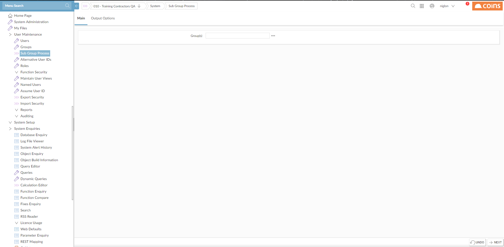

To set function access using subgroups:
We recommend the following:
- Set up sub groups to collect together the functions that relate to the business processes each job position requires. In particular, set up separate groups for input and
We recommend you set up subgroups for related functions and types of access. For example:
- A subgroup for PL
- A subgroup for PL Invoice and Payment Entry (with update access).
- A subgroup for PL Administration and Maintenance functions (with update access).
Use Groups to create subgroups.
NOTE
- A subgroup for PL
- Specify the access permissions to collections of functions.
To set the access permissions, you can use:
- Main Menu Security, entering the code for the subgroup.
- The Group Function Access tab while maintaining the subgroup in Groups.
- Set up main groups that correspond to roles or job positions in your organ
Do not set up any access permissions on the main groups. If you introduce a new position with different responsibilities, set up a new group.
We recommend you set up main groups to correspond to user roles or job titles, and that you do not set up access permissions on the main groups; use sub groups for setting access permissions. This is because if you change the permissions on a main group, these will be overwritten when you next process the sub groups -- the first thing the process does is to delete all existing group permissions.
Use Groups to create main groups. -
Add the appropriate subgroups to each group.
Assign one or more sub groups to each main group, according to the features you want that main group to have access to. Use the multiple selection Sub Group field to select the sub groups from the list.The order of the sub groups is important; when the sub group permissions are processed,
(In practice we do not expect Deny access to be used very often. However if you are using Menu Item Security, the order in which Read-Only access and Update access are specified may be important.)
- Use Sub Group Process to set the access permissions on each main group based on the sub groups that belong to it.
Processing the access permissions on groups involves running a function that evaluates the permissions on each sub group assigned to a group, in turn, and copies the permissions to the main group. This means that you can change the access on sub groups, and then only need to reprocess the main groups.
- Go to Sub Group Process.

- Specify the groups you want to process.
As well as copying the function access permissions to the main groups, this also copies group field security and HS sales event security settings from the sub groups to the main groups.
- Assign each user to one or more main groups.
Use Users to specify the group or groups each user belongs to.
- Go to Users.
- Click
 to open a user record.
to open a user record.

Because
- On the Groups tab, select the main group that corresponds to the user's job position.
- Click
 .
.
- If necessary, fine-tune the access for individual users; you can use any of the function security features to do this.
See, for example: